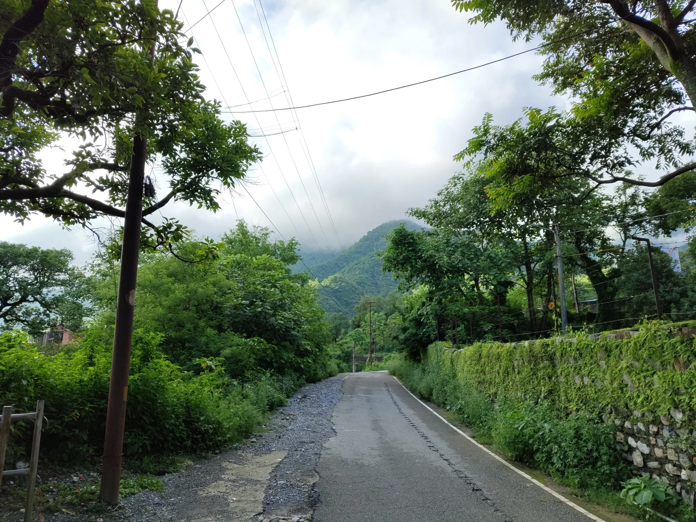
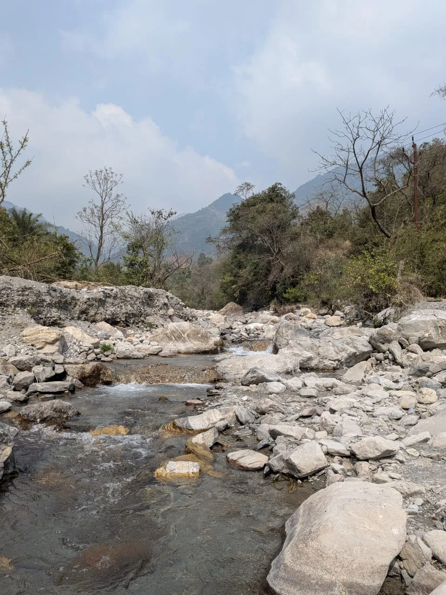
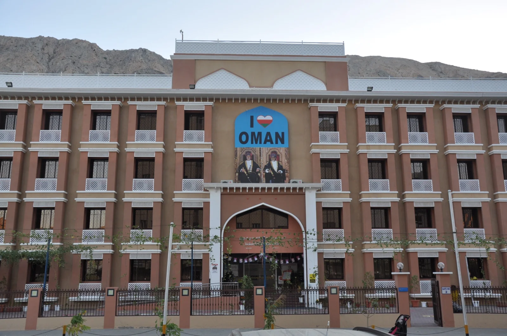
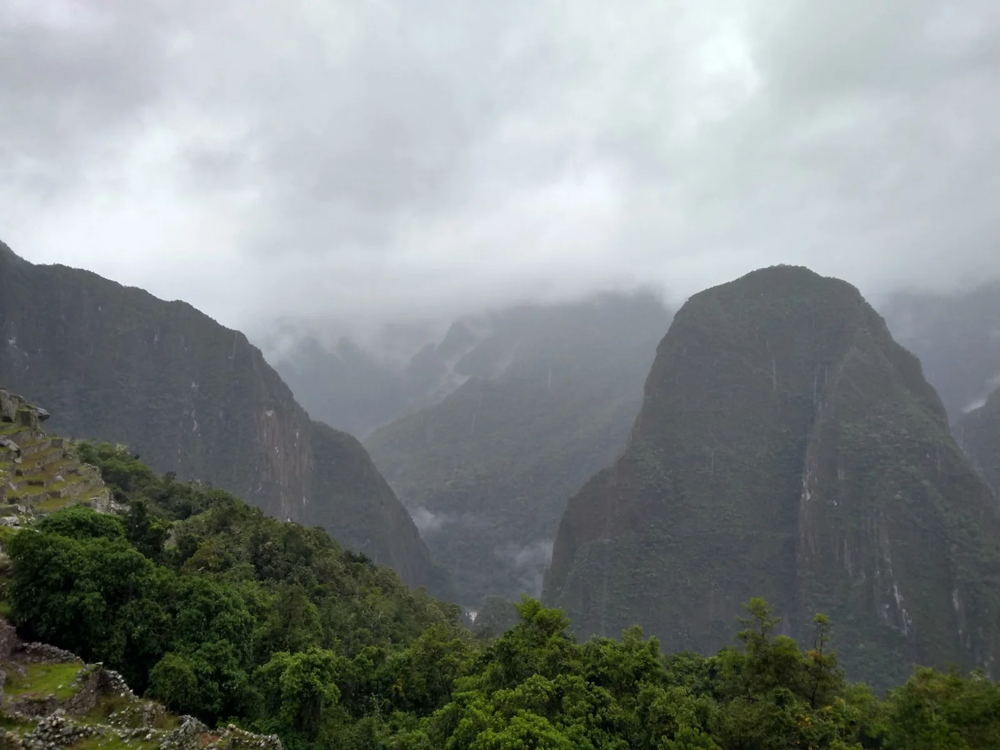
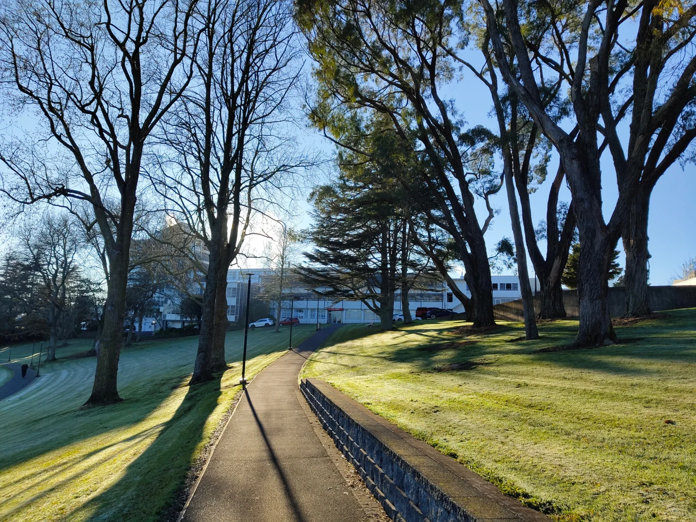
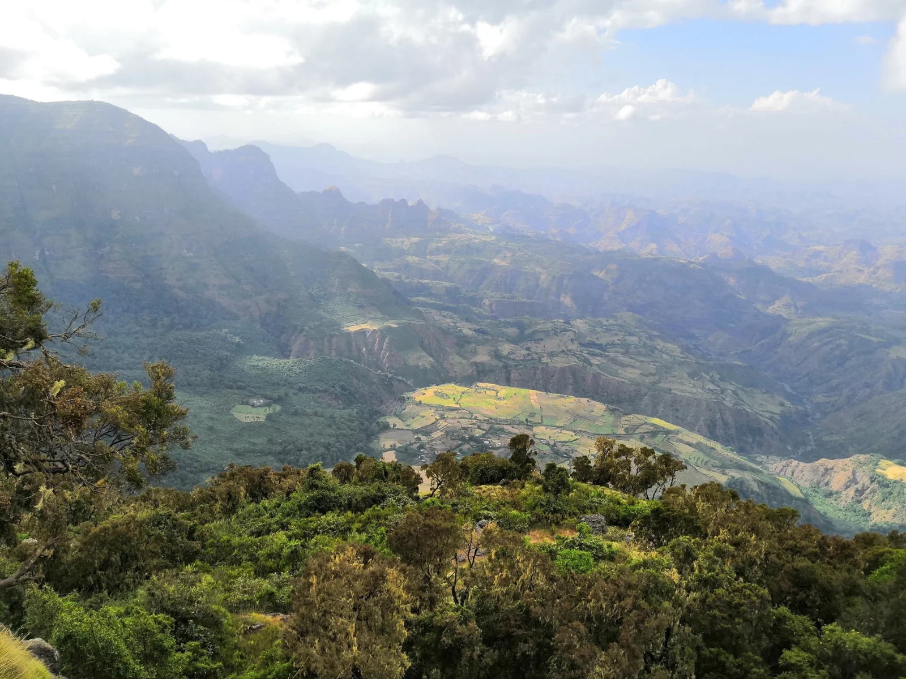
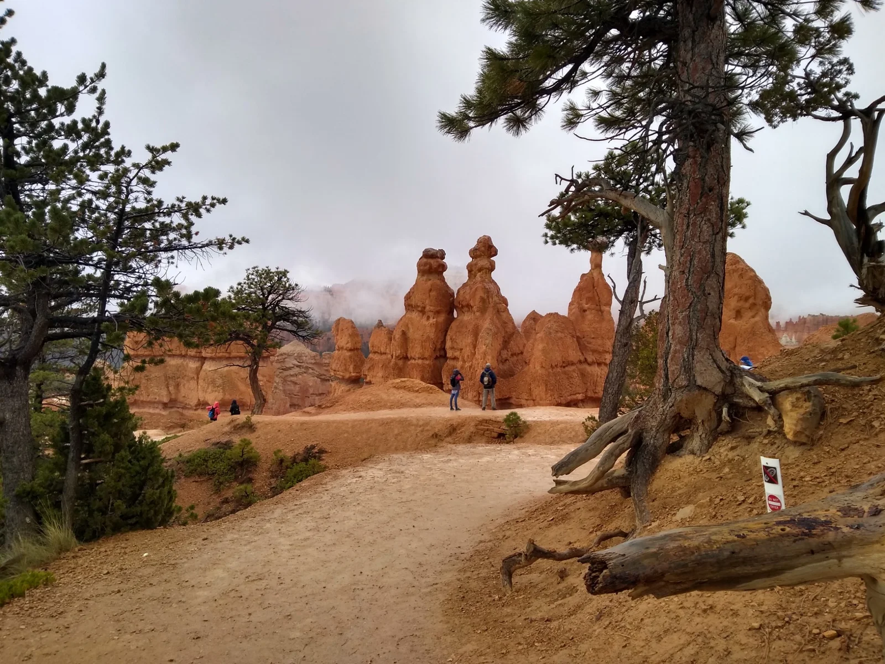

TEACHER STATEMENT AND PEPEHA
Teacher statement
Why I teach
Our experiences shape our outlook on life, our understanding of knowledge, the way we process emotions and our interactions with others. Every interaction I have with a student becomes one of the experiences that contributes to the person they become. As a teacher, I am therefore responsible not only for what students learn, but also for how their experiences in my classroom affect their confidence, curiosity and willingness to learn.
Through my interactions with young people, I have learnt that life is not always simple, and that pursuing a healthy and fulfilling life involves both personal and societal challenges. I also understand that my own experiences may not always be relevant to those of my students. This makes listening particularly important. My motivation is not to prepare students to respond to life exactly as I have, but to help them develop the knowledge, confidence and judgement needed to deal with their own circumstances.
What I believe about learning
I grew up in a multicultural family that allowed considerable freedom of thought, but within a society that often demanded conformity. This made me value personal autonomy and taught me the importance of questioning authority. Over time, I came to see rationality and empirical evidence as the most consistently reliable tools for understanding the world. I also learnt that these tools must be guided by ethics and compassion. Evidence can help us determine what is likely to be true, but it does not automatically tell us how people should be treated.
Bertrand Russell and Karl Popper have influenced how I understand these values. Russell (1912) argues that the value of philosophical inquiry lies partly in its uncertainty: questioning our assumptions enlarges what we are able to consider and reduces the certainty with which we hold unexamined beliefs. For me, this means that education should not simply replace students’ beliefs with the teacher’s beliefs. It should give students the confidence and tools to examine ideas, including those presented by the teacher.
Popper (1959) similarly presents scientific knowledge as open to criticism and revision rather than as a collection of final truths. This has influenced how I respond to mistakes. An incorrect explanation is not necessarily a failure; it may be the beginning of an investigation. My role is to help students test their ideas against evidence, recognise their limitations and revise them. However, this does not mean that every claim is equally valid. Students also need to learn that scientific explanations must remain accountable to evidence.
These ideas connect with the Nature of Science strand of the New Zealand Curriculum (Ministry of Education, 2007). Not every student will continue studying Science, but every student will encounter claims about health, technology, climate and the natural world. Junior Science should therefore develop both scientific understanding and the ability to judge how that understanding was produced.
What learners can expect from me
My experience and subject knowledge are strengths, but they also create a possible weakness. After teaching Physics for many years, some ideas and procedures that now seem obvious to me may be unfamiliar or difficult for a beginning learner. I need to guard against confusing my familiarity with the content for clarity in my teaching. This requires me to elicit students’ existing ideas, listen carefully to their explanations and provide appropriate scaffolding rather than simply repeat an explanation more slowly.
I want my classroom to be a place where students can ask questions, offer an explanation and make mistakes without being embarrassed. This requires respectful relationships and an understanding of differences in students’ prior knowledge, language, confidence and learning needs. I aim to maintain meaningful expectations while adapting the support students receive. Questioning, discussion and students’ work should help me identify what they understand, provide useful feedback and decide what needs to change in my teaching.
During my placement at Raglan Area School, I have helped build physical models under my mentor’s guidance and observed their use in learning activities. This connects with my interest in making abstract ideas accessible through representations that students can examine and question. A model is useful only if students understand both what it represents and where the comparison breaks down.
My pedagogy is consequently based on being honest with students about the challenges in front of them without presenting those challenges as impossible. I aim to involve students in questioning, investigating, discussing and making decisions. Student ownership does not remove my responsibility to provide structure, explicit teaching and support when these are needed.
Teaching in Aotearoa New Zealand
My continuing area for growth is learning how to enact these principles within Aotearoa New Zealand. This includes becoming more familiar with the local curriculum, te ao Māori, culturally responsive practice and the communities in which I teach. I cannot assume that extensive teaching experience elsewhere automatically prepares me to understand my learners here.
I am committed to developing my understanding of Te Tiriti o Waitangi and what its commitments require of my practice. This means learning from Māori colleagues, learners and whānau, valuing mātauranga Māori, using te reo Māori respectfully and supporting Māori learners to experience success as Māori. Learning the school karakia is one starting point; the responsibility also extends to the relationships I build, the knowledge I value and the decisions I make in the classroom.
Becoming the teacher I want to be will require the same intellectual humility that I hope to develop in my students: being willing to listen, question my assumptions and change my practice when the evidence shows that I should.
References
Ministry of Education. (2007). The New Zealand curriculum: For English-medium teaching and learning in years 1–13. Learning Media.
Popper, K. R. (1959). The logic of scientific discovery. Hutchinson.
Russell, B. (1912). The problems of philosophy. Williams and Norgate.
Pepeha
Tēnā koutou katoa.
Ko ngā maunga o Jharipani me Barlowganj ngā maunga e piri ai ahau.
Ko Rispana te awa.
Ko Dehradun te wāhi i tipu ake ai au.
Ko India tōku whenua.
I noho au ki Oman mō ngā tau e rima, ā, i mahi au hei kaiako i reira.
I noho hoki au ki Peru mō ētahi marama, ā, he hononga tonu tōku ki reira.
Ko Kirikiriroa tōku kāinga.
Ko Waikato te wāhi e ako nei au, hei kaiako.
Ko Te Whare Wānanga o Waikato tōku whare wānanga.
Ko Yasmeen tōku whaea.
Ko Haaris Jamil ahau.
Nō reira, tēnā koutou, tēnā koutou, tēnā koutou katoa.
Places and people in my pepeha
Photographs supplied by Haaris Jamil.

The hills of Jharipani, near Dehradun, where I grew up.

Rispana, the river I name in my pepeha.

My school in Oman, where I worked as a teacher.

Machu Picchu, Peru. My time in Peru left me with a lasting connection to the country.

The School of Education at the University of Waikato, where I am studying to become a teacher in Aotearoa New Zealand.
Other journeys
These journeys are part of my wider story, rather than places named in my pepeha.

The Simien Mountains, Ethiopia - another journey that broadened my experience.

Bryce Canyon, visited during an exchange trip to Wasatch Academy.